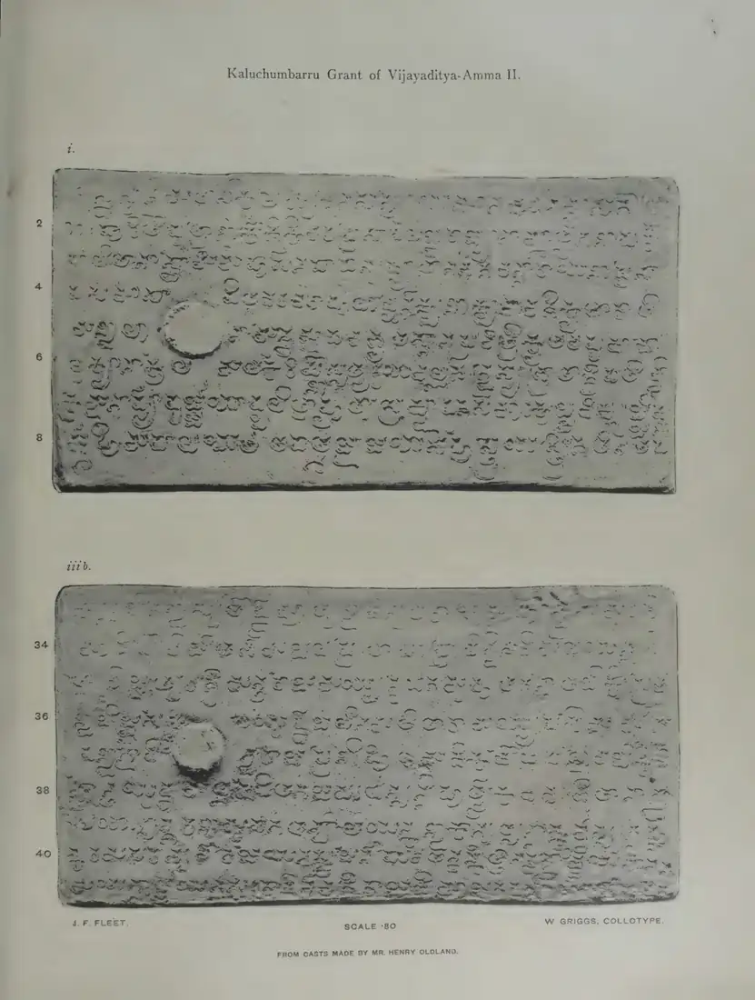
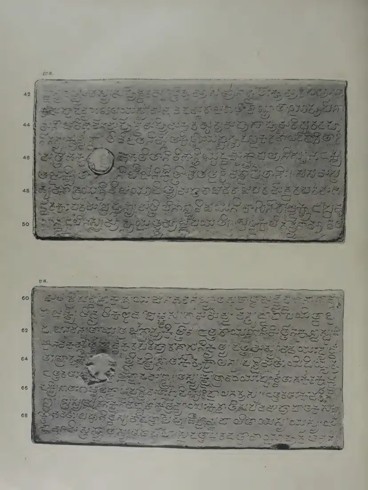

Kaluchumbarru grant of Vijayāditya-Amma II
KALUCHUMBARRU GRANT OF VIJAYADITYA-AMMA II.
By J. F. FLEET, I.C.S. ( RETD.), PH.D., C.I.E.
This record is the one which I have entered as U. in Ind. Ant. Vol. XX. p. 271, in one of my papers on the Eastern Chalukya chronology, and from which I have given a short extract (verse 8, line 35 ff.) in the same Journal, Vol. XII. p. 249. I edit it from the original plates, which belonged to Sir Walter Elliot and are now in the British Museum. There is no information as to where they were obtained.
The plates are five in number, each measuring about 8½" by 4½3/16". The first of them is inscribed on one side only; the others are inscribed on both sides. The edges of the inscribed
1 No. 91 of the Government Epigraphist's collection for 1897.
2 No. 65 of the Government Epigraphist's collection for 1892.
surfaces, except the last, were raised into rims, to protect the writing. The outer side of the last plate, having no such rims, is somewhat worn; and a few letters there are more or less illegible. But the rest of the record is in a state of very excellent preservation; and the text of it is quite clear and certain, throughout, except in one place in line 36.— The ring, on which the plates are strung, is about " thick and in diameter. It has been cut; but it seems to be the same ring which was attached to the plates, and which had not then been cut, when the record first came under my observation, in 1877 or 1878. The seal, in which the ends of the ring are secured, is circular, about 3" in diameter. It has, in relief on a countersunk surface,— across the centre, a boar, standing to the right (proper left), and the legend sri-Tribhuvan[á*]îmku[sa]h, which presents a motto of the kings of the dynasty and means "the glorious elephant-goad of the three worlds:" the sa, which is considerably damaged, stands behind the boar, and the visarga is in front of the boar; the rest of the legend is in one line above the boar. Above these, there is an elephant-goad, with the sun and moon above it. And, below the boar, there is a floral device, apparently an expanded water-lily shewing seven or eight petals.— The characters belong to the southern class of alphabets, and are of the regular type of the locality and period to which the record belongs. They range in size from a little more than to nearly . The engraving, though good, is not very deep; and, the plates being substantial, the letters do not shew through on the reverse sides. Marks of the working of the engraver's tool can be seen in many places, both in the interiors of the letters, and in the copper which was pushed up by the tool at the sides of them; such marks on the sides of the letters, caused in the same way, can be seen very clearly in the lithograph of the Korumelli plates of Râjarâja I.1 The lingual d is distinguished from the dental d by a slight but marked prolongation upwards of the end of the character. The record presents final forms of k in line 17, of t in lines 8, 29, 31, 32, 42, 60, and 73, of n in lines 11 and 31, and of m in lines 10, 12, 13, 14 (twice), 15, 35, and 71. In line 15 it presents a peculiar mark of punctuation, regarding which reference may be made to the foot-note to that passage. As regards palæography,— the guttural ñ does not occur. The kh, j, b, and l, all present the later cursive forms, throughout. The initial short i occurs three times; once in line 43, and twice in line 66. In each instance, it is of the old square type, but the actual form of it presents the following abnormal feature. The full form of the old square initial short i of the alphabet with which we are concerned, consisted of an upper component which may be likened to the outstretched wings of a hovering bird, and of a separate bottom part which consisted sometimes of two circles, as may be seen very clearly in iti, the last word of the Haidarâbâd plates of Pulakêsin II. of A.D. 612,2 and sometimes of two points or dots, as may be seen in iva, line 15, No. 15, and in iv=, line 40, the last akshara but four, of the Diggubarçu grant of Châlukya-Bhîma II. of the period A.D. 934 to 945.3 The peculiarity in the present record is, that the ends of the upper component have been brought right down to the lower line of the writing, and the bottom components have been omitted. The form of the letter thus presented is not a transitional form, but is a variety of the old square type. It may be characterised as more or less of a freak. But it cannot be stamped as a mistake. I have found one similar instance, in the word iti in line 23 of the Kolavennu plates of the period A.D. 934 to 945;4 and there it might perhaps be treated as a mistake, because the two bottom components are duly shewn in that record, as points, in indur, line 19, and itham, line 22. In the present record, however, there is no such contrast: the abnormal form only is presented; and it was plainly intended.— In lines 73, 74, there is a Telugu passage, for the translation of which I am indebted to Dr. Hultzsch; and lines 65, 66 present some Telugu words, including the genitive Idiyûri. But, with those exceptions, the language is Sanskrit throughout. There are two of the customary benedictive and imprecatory verses in
1 Ind. Ant. Vol. XIV. p. 52, Plate iv. a, the last four or five lines, and Plate v.
2 Id. Vol. VI. p. 73, Plate.
3 Id. Vol. XIII. p. 214, Plate.
4 South-Ind. Inscrs. Vol. I. p. 45. A lithograph, however, has not been given there; and I am quoting from ink-impressions.
lines 68 to 70, and seventeen ordinary verses in the body of the record, with one more, in line 72 f., which refers to the ájñapti, the writer, and the composer of the record.— In respect of orthography, we need note only (1) the incorrect sañdhi, made by the use of an epenthetic m, in brahmanyam=Attili, for brahmanya Attili, or more correctly brahmanyó=Ttili, in line 49 ;1 (2) the omission to combine the t and s in sañdhi in sat-šaraṇam, line 39, and śrímat śrí, line 59-60 ; (3) the omission of the visarga in cháru-śrí, for cháru-śríh, line 55-56, in accordance with an optional rule of Southern India,— taught, Professor Kielhorn tells me, in the Vyásaśikshá,— which permits the omission of a visarga before a sibilant that is followed by any consonant, hard or soft ;2 (4) the doubling of s before y, once, in tassya, line 65 ; and (5) the use of ś for s three times, in ašau, lines 17, 41, and vitráša, line 18.
The inscription is a record of the Eastern Chalukya king Amma II., otherwise called Vijayáditya VI. It is not dated. But we know, from other sources,3 that he was anointed to the sovereignty on Friday, 5th December, A.D. 945, and reigned for twenty-five years. It registers the grant of a village named Kaluchumbarru, in the Attilinâṇdu province (vishaya),4 to a Jain teacher named Arhanandin, belonging to the Valahâri gana and the Ađdakali gachchha, for the purpose of providing for repairs to the charitable dining-hall of a Jain temple called Sarvalôkáśraya-Jinabhavana. The grant was evidently made by Amma II. himself ; but it was “ caused to be given ” by a certain lady named Châmekâmbâ, who belonged to the Paṭṭavardhika lineage and was a pupil of Arhanandin : on this point, see page 182 below The Telugu passage at the end of the record mentions a present made by Arhanandin himself to the writer of the record.
To the identification of the places referred to in this record, we are led by the mention of the Attilinâṇdu vishaya in line 49. This province evidently took its appellation from a town named Attili, which still exists in the Taṇuku tâluka of the Gôdávarî district, Madras Presidency ; in he Indian Atlas sheet No. 94 (1899), it is shewn as ‘ Uttellee,’ in lat. 16° 41', long. 81° 39', seven miles south-west-half-west from Taṇuku. The name of the village that was granted, is presented as Kaluchumbarru in line 61, and in line 73 as Pedda-Kaluchuvubarru ; this latter appellation marks it as being then the larger or older of two villages bearing the same name. It is the ‘ Kunsamurroo’ of the map, the village-site of which is about three miles south-by-west from Attili ; the modern form of the name is to be explained by the not infrequent interchange of l and n, and by a transition of ch into s. Of the other places, mentioned in specifying the boundaries of Kaluchumbarru, Âruvilli, on the east, is the ‘ Arraveelee’ of the map, the village-site of which is one mile towards the south-east from that of ‘ Kunsamurroo ;’ and Korukolanu, on the south, is ‘ Corecolloo,’ one mile and a half south-west from ‘ Kunsamurroo ;’ and the Yiđiyûru of line 64, on the west, mentioned again as Iđiyûru in line 66, is ‘ Eedooroo,’ one mile and a half west-north-west from ‘ Kunsamurroo.’ The other names cannot be identified,
1 With this instance, compare the similar use of m in Sûryyasutam=iva and Vṛikbđaram=iva, in Vol. III. above, p. 4, lines 4, 5 ; and that passage presents also an epenthetic v, in niravadya-vudđra, for niravady-ôdđra. We have a somewhat similar use of m in Kalpalu(dru)mam=iv and Janđrddanam=iv in Ind. Ant. Vol. XVIII. p. 267, lines 7, 8 ; line 7 of that record, however, presents also savitđram=iv=ôdayavantam for savit=év=ôdayavdñ, which indicates the use, in the other two instances, of the accusative for the nominative, rather than of an epenthetic m.— Originally, not knowing of the existence of the modern Attili, I thought that the present reading ought to be corrected into brahmany[ó*] Mattili. And that was how I came to present the name of the district as Mattilinâṇdu, in Ind. Ant. Vol. XX. p. 271.
2 In his South-Ind. Palæo. p. 31, Dr. Burnell said :— “ In S. India the alternative allowed by the grammarians “ of assimilating visarga to a following sibilant is almost universally accepted, and the reduplication of the sibilant “ then omitted.” This remark covers the case in question, but also includes more ; it would justify the omission of a visarga before a sibilant which is not followed by a consonant.
3 See Ind. Ant. Vol. XX. p. 271.
4 Regarding my having previously taken [the name of this province as Mattilinâṇdu (Ind. Ant. Voi. XX. p. 271), see note 1 above.
unless Yullikodamandru, on the north, is 'Komera,' about two and a half miles north-west-by-north from 'Kunsamurro.'
The Attili country is mentioned again, as the Attili désa, in the Chellúr plates of A.D. 1143, where, we can now see, the correct reading is, — désê=sâv=Attil-îti kshititala-viditê . . . . prâdâd . . . . Kâta-danâdhinâthah,1— “this same Kâta, the leader of the forces, gave to learned Brâhmans the Manđadorru agrahâra, together with the village of Ponduva, in the district known on the earth by the name of Attili.” The Manđadorru agrahâra, it may be added, seems to be the 'Mamdooroo' of the Atlas sheet, about four miles south-east from Attili, and two miles on the east of 'Kunsamurro.'
Differing from all the records of the Western Chalukyas of Bâdâmi, and from some of the other records of the series to which it itself belongs,2 this record presents the family-name, in line 5-6, in prose, as Châlukya, with the long â in the first syllable. It does the same, again, in prose, in line 30, in mentioning the king Châlukya-Bhîma I. But in line 52 it presents the family-name as Chalukya, with the short a; this instance is in verse.
In order to introduce a play upon words in connection with the incarnation of the god Vishnu as a dwarf, the composer has presented the name of the founder of the dynasty as Kubja-Vishnu (line 7), instead of using the full form Kubja-Vishnuvardhana.
In connection with Vijayâditya III., it may be noted that this record, following some others, presents in line 15, in verse, in the form of Gunaga, a biruda, belonging to him, which in the Masulipatam(?) plates of Châlukya-Bhîma II., of the period A.D. 934 to 945, is presented as Gunaka.3 And in the same verse, just after that, it describes him as añkakâras=sâkshât. As gunaka means 'a calculator, reckoner,' and añka means 'a numerical figure,' I originally took the expression añkakâras=sâkshât as meaning “a thorough arithmetician,” and as explaining the biruda.4 And it is, in fact, difficult to avoid thinking that the composer of this record may have had in view some kind of an explanation of the biruda as presented here. The full form of the biruda, however, was Gunakenallâta, “he who is good, excellent, or beautiful on account of his virtues,” as given in the Kolavennu plates which also were issued in the time of Châlukya-Bhîma II.5 And, though añkakâra may have to be here invested with a secondary meaning, there is no doubt that it also stands for the word which in the southern records is usually written añkakâra, with the Drâviđian r, and that the expression used by the composer is properly and primarily to be translated by “a veritable champion.”6 Like all the other records, with one exception, this record states that Vijayâditya III. reigned for forty-four years, and does not, in reality, add an alternative statement of forty-eight years; see note 8 on page 189 below. The sole exception is the Pithâpuram plates of Vîra-Chôđadêva of A.D. 1092-93, which specify forty years;7 this is to be attributed to a careless omission of the syllables tušcha or šchatu.
1 Ind. Ant. Vol. XIV. p. 58, line 49 f. For the point that the real date of this record is the 24th March, A.D. 1143,— not the 23rd March, A.D. 1132, as suggested by me in id. Vol. XX. p. 285,— see page 9 f. above, where Prof. Kielhorn has shewn that the record presents rasa-visikha by mistake for visikha-rasa.
2 Regarding the variants of the family-name in, respectively, the Western and the Eastern records, see my Dynasties of the Kanarese Districts (in the Gazetteer of the Bombay Presidency, Vol. I. Part II.), p. 336, note 3, and Ind. Ant. Vol. XX. p. 95, note 10.
3 Vol. V. above, p. 136, line 12-13.
4 Ind. Ant. Vol. XX. p. 102.
5 South-Ind. Inscrs. Vol. I. p. 44, line 12.— I have already made some remarks on this biruda in Vol. VI. above, p. 179, note 2.
6 For the meaning of añkakâra, see Vol. VI. above, p. 56, note 1. To what has been said there, it may be added that Monier-Williams' Sanskrit Dictionary, revised edition, gives añkakâra as used in the Bálardmdyaya to mean 'a champion chosen by each side to decide a battle.'
7 Vol. V. above, p. 76, line 26. For the exact year of this record, see Vol. VI. above, p. 335.
Differing from all the other records, this one says, in line 30 f., that Vikramāditya II. reigned for nine months. Of the other records, some say eleven months, and some say one year.1
If taken as it actually stands in line 31 f., in prose, this record would represent Yuddhamalla II. as Tālapa-rāj-āgrajajanmaw, "born from an elder brother of king Tālapa." This statement, however, is not borne out by the other records which mention the parentage of Yuddhamalla II. There is, indeed, one record, the Diggubarru grant of the period A.D. 934 to 945, which, in verse, speaks of him as Malla, and describes him as Tāha-jyēshṭha-suta;2 and this expression, while ordinarily and most naturally meaning "eldest son of Tāha," might also be rendered as meaning "son of an elder brother of Tāha." The other records, however, are more explicit; and, it may be added, they all speak of him by his full name of Yuddhamalla. The Paṭamkalūru grant, of the period A.D. 945 to 970, describes him, in verse, as Tālapa-rājasya sūnu,3 "son of king Tālapa." The Masulipatam plates, of the same period, describe him, in prose, as Tāl-ādhipa-sūnu,4 "son of the lord Tāla." The 'Yelivarru' plates, also of the same period, describe him, in prose, as Tālapa-rājasya suta,5 "son of king Tālapa." And the Korumelli plates, of the period A.D. 1022 to 1063, the Chellūr plates of A.D. 1090-91, and the Pithāpuram plates two years later in date, describe him, in prose, as tat-Tāṭapa-rāja-suta,6 "son of that same king Tāṭapa." And, in view of those statements, we may safely decide that there is a mistake of some kind in the present record; the explanation perhaps is that the composer used the word agrajanman, 'first-born,' in the sense, whether correctly or not, of 'eldest son,' instead of in its usual meaning of 'elder brother,' and that either he, or the writer of the record, carelessly repeated the ja and so produced the reading which is actually presented but is certainly wrong.
In connection with Chālukya-Bhīma II. (A.D. 934 to 945), whom it calls in line 33-34 simply Bhīma, and in line 41 Rāja-Bhīma, this record mentions, in line 35 ff., the following enemies overthrown by him, namely, Rājamayya, Dhaṭaga, Tātabikki, Bijja, Ayyapa, Gôvinda, a ruler of the Chôṭas named Lôvabikki, and Yuddhamalla. Yuddhamalla is undoubtedly the Eastern Chalukya king Yuddhamalla II., the immediate predecessor of Chālukya-Bhīma II.; a specific mention of his overthrow and expulsion by Bhīma II. is made in the Paṭamkalūru grant of the period A.D. 945 to 970.7 Gôvinda is the Rāshṭrakūṭa king Gôvinda IV., for whom we have dates ranging from A.D. 918 to 933-34. Ayyapa is very possibly the Ayyapadēva, doubtless a Noṭamba prince of the Noṭambavāḍi territory in Mysore, to whom the Western Gaṅga prince ĥreyyappa lent a force for the purpose of fighting against a certain Vīramahēndra;8 and, if so, it probably follows that Vīramahēndra was another biruda of Chālukya-Bhīma II., or, rather, was a variant of his biruda Gaṅdamahēndra. Bijja seems to be identical with the Dantivarman, also named Bijja, who is mentioned in the spurious Sūḍi plates, apparently in connection with Banavāsi, as one of the foes against whom, it says, the Western Gaṅga prince Būtuga II. (A.D. 940 and 953) fought and prevailed.9 And Rājamayya is perhaps the Rājavarman who, also, is mentioned in that record, but without any indication as to where his territory lay. Lôvabikki, the ruler of the Chôṭas, is not as yet known from any other sources. To Dhaṭaga and Tātabikki reference is made in the Kolavennu plates of Chālukya-Bhīma II. himself, in a verse which,
1 See Ind. Ant. Vol. XX. p. 269. And, for the statement of eleven months, add now the Pithāpuram plates; see Vol. V. above, p. 76, line 28.
2 Ind. Ant. Vol. XIII. p. 214, line 30 f.
3 Id. Vol. VII. p. 16, line 19.
4 Vol. V. above, p. 140, line 15 f.
5 Ind. Ant. Vol. XII. p. 92, line 21.
6 See, respectively, Ind. Ant. Vol. XIV. p. 52, line 45; id. Vol. XIX. p. 429, line 42; and Vol. V. above, p. 76, line 28.— In line 17 of the Chellūr plates of A.D. 1143 (Ind. Ant. Vol. XIV. p. 56; for the correct date of this record, now given, see note 1 on page 180 above), the composer or writer used only the expression tat-sūnu, omitting Tāṭapa-rāja; with the result that that record practically represents Yuddhamalla II. as a son of Vikramāditya II.
7 Ind. Ant. Vol. VII. p. 18.
8 See Vol. VI. above, p. 47.
9 See Vol. III. above, p. 183.
presenting their names in the somewhat different forms of Dhaĵadi and Tātabikyana, appears to say:—“He, this Râjamârtaṇḍa (a very sun among kings), piercing (everything) in front (of him), having conquered in battle, with his arm, him who was named Tātabikyana, (and also) Dhaĵadi, causes his fame to be sung by people.”1 We have, however, no information as yet as to the part of the country to which they belonged.
It may be remarked, incidentally, that a biruda of Chálukya-Bhima II., not mentioned in this record, which is presented in the Guṇḍugolanu grant of the period A.D. 945 to 970 as, apparently, Kaṛayilladāta,2 would have been given more correctly as Kaṛeyilladāta: it means “he in whom there is no spot or blemish” (kaṛey-illad-āta); and it answers exactly to the Sanskrit appellation Akalañka.
Châmekâmbâ, who caused the grant to be made, seems to be clearly marked by line 53 as a courtesan. It would appear, therefore, that she was a favourite mistress of the king. And, for a case analogous to this one, we may quote that of the courtesan Vinâpôti, the prânavallabhâ or “mistress as dear as life” of the Western Chalukya king Vijayâditya, who is mentioned in one of the Mahâkúṭa inscriptions as making certain grants to a temple, and whom that record has treated with such respect as to name also her mother and grandmother.3 So, also, the spurious Sûđi plates claim a grant of some land at that village by the Western Gaṅga prince Bútuga II. for the purposes of a Jain temple founded by his mistress Dîvalâmbâ.4
The Paṭṭavardhika lineage (anvaya),—to which, as is indicated in line 52 f. of this record, Châmekâmbâ belonged by birth, and in respect of which we are told that the members of it belonged to the retinue of the Chalukya kings,—is mentioned as the Paṭṭavardhini race (vamśa) in a record of Amma I. (A.D. 918 to 925). That record specifies, as members of it, Kâlakampa, who had been a follower of Kubja-Vishṇuvardhana I., and, with his permission, had killed in battle (a king) Daddara and seized his insignia; a descendant of Kâlakampa, named Sômâditya; Sômaditya's son Pritiviyarâja; and Pritiviyarâja's son Bhaṇdanâditya, also called Kuntâditya, who had been a servant of Vijayâditya IV. (A.D. 918), and to whom the grant of a village, registered in the record, was made.5 And another reference to it is to be found in a record of Amma II. (A.D. 945 to 970), which registers the grant of some fields to the Yuvarâja Ballâladêva-Vêlâbhaṭa, also called Bođdiya, son of (the lady) Pammavâ (of) the Paṭṭavardhini (family).6
1 South-Ind. Inscrs. Vol. I. p. 45, line 17 ff. I read the first two pâdas, from an ink-impression, thus:—Yas-Tātabikyan-âkhyamñ=Dhaĵadi munn-īṇiva Râjamârttaṇḍau. The verse is in the Âryâgîti metre. At the end of the first pâda, âkhyamñ has of course to be corrected into âkhyan. In the second pâda, three syllabic instants are wanting; the metre may be set right by reading:— Dhaĵadim munn-īṇiva Râjamârttaṇḍô=sau. The words munn-īṇiva are Kanarese.
2 Ind. Ant. Vol. XIII. p. 249, line 17-18.
3 Id. Vol. X. p. 103.
4 Vol. III. above, p. 184; and see Ind. Ant. Vol. XXX. p. 217, No. 31. The expression svaktya-priyâ, in line 70 of the text, should be rendered by “his mistress;” not by “his wife,” as was done by me in editing the record. This should perhaps have been recognised by me at the time, from the description of Dîvalâmbâ in line 64 as “the one Rambhâ of the world;” and also because, the passage being in prose, the word patnt or ihâryâ might have been used just as readily as priyâ, if a wife was really intended. But there are, I think, a few cases in which quite respectable women were likened to Rambhâ in respect of their beauty and general charms; and the name itself occurs as the name of Rambhâ, the sâdhvî or “virtuous wife” of the poet Ratnasimha, in the Ratnapur inscription of Prîthvidêva (Ep. Ind. Vol. I. p. 50, verse 12). However, we know now that the wife of Bútuga II. was Rêvakanimmadî; see Vol. VI. above, p. 71.
5 South-Ind. Inscrs. Vol. I. p. 43.
6 Vol. V. above, p. 140.
In addition to conveying the village itself, the record recites, in line 70 f., the grant in perpetuity, to a certain Kusumâyudha, son of Kaṭtalâmbâ, of the grâmakûtava or office of Grâmakûta or headman of the village. The post was evidently that of the village official who is known in Marâthî as the Pâtêl or Pâtil, and in Kanarese as the Gavuda or Gauda.
Of the Kanarese word gavuda or gauda, we have various earlier forms, — gaunda,1 gavunda,2 gâvunda,3 gavundu,4 gâvundu,5 gâmunda,6 and gâmundu.7 And we can now see that it was derived from the word grâmakûta itself, through a corruption of grâma into some such form as the gâmvu which occurs as the termination of certain village-names in the Paithan plates of A.D. 1272,8 coupled with, in kûta, a disappearance of the k and a softening of the t into d, and accompanied by a shifting of the nasality of the first component of the word. It may be added that, in colloquial usage, the modern form gauda is often nasalised and pronounced gaunda; also, that Professor Pischel tells me that the Désinâmamâlâ, ii. 69, gives gâmaüda as the Prâkrit form of grâmakûta.
It may be remarked here that the Marâthî word pâtêl, pâtil, can now be distinctly traced back to the earlier word paṭtakila, which we have in, for instance, the Ujjain plates of A.D. 975 and 10239 and the Bhôpâl plates of A.D. 1200,10 through an intermediate form paṭtêla which I have found in a Sanskrit Nâgarî inscription, of about the thirteenth century A.D., at Mañchar in the Poona district, in which a certain person is described, in verse, as paṭtêla-varya, “best or chief of the paṭtêlas.” In this case, again, there has been an elision of a medial k.
* * * * *
In line 72, the record presents the expression âjñaptih kaṭakâdhisâh. The word âjñapti means literally ‘a command.’ But, as has been indicated before now, in such passages as the present one it was employed to denote the Dûtaka or messenger, whose duty it was to communicate the fact and details of a grant to the local authorities.11 What was intended by the word kaṭakâdhisâ, has not been so obvious. But it can now be made clear by a comparison of passages.
1 Vol. V. above, p. 232, and p. 247, line 34.
2 Ibid. p. 232.
3 Ibid. pp. 214, 261; and Ind. Ant. Vol. XII. p. 219, the last line of the text: this last instance is of A.D. 866.
4 Jour. Bo. Br. R. As. Soc. Vol. X. p. 245, line 48.
5 Ibid. p. 204, line 1, and p. 245, line 46; the first of these two instances is of A.D. 980.
6 Ind. Ant. Vol. XI. p. 70, line 17, of about A.D. 750; and id. Vol. XIX. p. 144, line 8 ff., of about A.D. 690.
7 Id. Vol. XII. p. 271, lines 12, 13; this instance is of A.D. 973.
8 See id. Vol. XXX. p. 517.
9 Id. Vol. VI. p. 51, line 10, and p. 53, line 7-8. Mr. N. J. Kirtane, who edited those records, recognised the meaning of paṭtakila, and translated it by pâtil.
10 Id. Vol. XVI. p. 254, line 10.
11 See, for instance, id. Vol. XX. pp. 18, 96, and Vol. V. above, p. 119.— The word has, indeed, been otherwise rendered, by ‘executor;’ see South-Ind. Inscrs. Vol. I. pp. 36, 62, and Vol. V. above, p. 71. But that is opposed by such expressions as âjñâ svayam and sva-mukh-âjñayâ in two of the records of the Eastern Gangas of Kaliñganagara; see Ind. Ant. Vol. XIII. p. 121, line 19, and Vol. III. above, p. 129, line 24. The word âjñâ, also, means ‘a command.’ It was, indeed, sometimes used in the same technical sense with âjñapti: for instance, another Eastern Ganga record says âjñâ mahâmahattara-Gauriãrmm[*], “the âjñâ is the Mahâmahattara Gauriãrman;” see Ind. Ant. Vol. XIII. p. 123, line 24. But in the expression sva-mukh-âjñayâ it is to be translated by its ordinary meaning of ‘command;’ the passage tells us that “this charter of Râjasimâha has been written, at the command of his (the king’s) own mouth, by Vinayachandra, son of Bhânuchandra.” In the expression âjñâ svayam, it may have a more technical meaning. But it cannot there mean ‘executor;’ for, a king would certainly not attend in person to the administration of an endowment made by him. On the other hand, neither would he act as a Dûtaka; and Prof. Kielhorn has reminded me of two cases in which the expression âjñâ svayam, in the transposed form svayam-âjñâ, “the âjñâ is Ourself,” is followed by the words dûtakas-ch-âtra, “and the Dûtaka in this matter is, etc.,” introducing the name of a person who was not the king who is designated by the words svayam-âjñâ; see Ind. Ant. Vol. IX. p. 170, line 21, and p. 175, line 22-23.
We must set aside one instance of an anomalous nature, occurring in the record of the second year of Vishnuvardhana II. It presents the expression sva-mukh-ājñāptā.1 Here, we have to emend the text, and read either ājñāptā, or ājñāpitā, or more probably ājñāptyā, “by the command of (Our) own mouth,” on the analogy of the sva-mukh-ājñāyā which occurs elsewhere.2 And, irrespective of the necessity for emendation, this instance is not to the point. The other instances, in chronological order, are:—
(1) The record of the eighteenth year of Vishnuvardhana I. recites,— . . . . . Ājñāptir=Aṭavidurjjayah,3— “the ājñāpti is Aṭavidurjaya, born in the illustrious Matsya family, who has bowed down his enemies by the strength and prowess of his arm.”— (2) The record which purports to be of the eighteenth year of Jayasimha I. but is of somewhat doubtful authenticity, recites,— a(ā)jñāptis=Siyaśarmm=āsya,4— “the ājñāpti of this (grant) is Siyaśarman.”— (3) A record of the time of Maṅgi-Yuvarāja (A.D. 672 to 696) recites,— ājñāpti Nissaramiji (?) . . . . .,5— “the ājñāpti is Nissaramiji (?).”— (4) A record of the time of Vijayāditya II. (A.D. 799 to 843) recites, in verse, . . . . . ājñāptir=asya dharmmasya Nṛiparudrō,6— “the ājñāpti of this act of religion is the most excellent prince Nṛiparudra, brother of Narēndramrigarāja-(Vijayāditya II.), born of the Haihaya race.”— (5) A record which purports to be of the same period (A.D. 799 to 843) but is of somewhat doubtful authenticity, recites, in verse,— a(ā)jñāptir=asya dharmmasya . . . . . Bołama-nám[â*] . . . . .,7— “the ājñāpti of this act of religion is that spotless best of men named Bołama, a very store of religion, who devotes his thoughts to meritorious actions in this world.”— (6) A record of the time of Vijayāditya III. (A.D. 844 to 883) recites, in verse,— ājñāptir=asya dharmmasya . . . . . Pâṇdarângah . . . . .,8— “the ājñāpti of this act of religion is the majestic Pâṇdarânga, who like a second Bibhatsu (Arjuna) has overcome all hostility by his valour.”— (7) A record of the time of Châlukya-Bhîma I. (A. D. 888 to 918) recites, in verse,— ājnâ(jña)ptir=asya dharmmasya Kađeyarâjah . . . . .,9— “the ājñāpti of this act of religion is the majestic Kađeyarâja, whose father's father was Pâṇdarânga who vexed his foes.”
(8) A record of the time of Amma I. (A.D. 918 to 925) recites,— ājñāpti[h*] kaṭakarâjah,10— “the ājñāpti is the Kaṭakarâja.”— (9) A record of the time of Amma II. (A.D. 945 to 970) similarly recites,— ajñāptiḥ kaṭakarâjah,11— “the ājñāpti is the Kaṭakarâja.”— (10) Another record of the same period (A.D. 945 to 970) similarly recites,— ājñāptiḥ kaṭakarâjah,13— “the ājñāpti is the Kaṭakarâja.”— (11) Another record of the same period (A.D. 945 to 970) similarly recites,— ājñâ(jña)ptiḥ kaṭakarâjah,13— “the ājñāpti is the Kaṭakarâja.”
(12) The present record, also of the time of Amma II. (A.D. 9➤5 to ṭ70) recites, in verse,— ājñāptiḥ kaṭakâdhiś[ô*],14— “the ājñāpti is the Kaṭakâdhiśa.”— (13) A record of the time of Râjarâja I. (A.D. 1022 to 1063) recites, in prose,— ājñāptiḥ kaṭi(ṭa)kêso,16— “the ājñāpti is the Kaṭakêsa.”
1 Ind. Ant. Vol. VII. p. 189, line 67, and Vol. VIII. p. 320, Plate.
2 See p. 188, above, note 11.
3 Ind. Ant. Vol. XX. p. 17, line 20.
4 Id. Vol. XIII. p. 138, line 28.
5 Id. Vol. XX. p. 106, line 28. For ājñāpti, read ājñāptiḥ.
6 Id. Vol. XX. p. 417, line 51 f. The actual reading of the name, presented in the original, is raṛiparudra.
7 Vol. V. above, p. 121, line 25.
8 Ibid. p. 125, line 34 f.
9 Ibid. p. 130, line 45 f.
10 Ibid. p. 183, line 36.
11 Ind. Ant. Vol. VII. p. 17, line 63. For ājñāptiḥ, read ājñāptiḥ.
12 Id. Vol. XII. p. 93, line 60.
13 Id. Vol. XIII. p. 250, line 35.
14 Page 188 below, line 72.
15 Ind. Ant. Vol. XIV. p. 55, line 113 f. I have previously taken this passage as meaning— “the ājñāpti is Kaṭakêsa, son of Râchiya-Peddêri-Bhîma;” see id. Vol. XX. p. 275. But the last words have to be connected with the name of the composer, Chêtanabhatṭa.
(14) A record of A.D. 1090-91 recites,— . . . . dattasy=ásya sásanasy=ájñaptih paincha pradhânâh,1— “the ájñapti of this charter, given in the twenty-first year of the glorious and victorious reign, is the five ministers.”— And similarly (15) A record of the same reign, two years later in date, recites,— . . . . dattasy=ásya sásanasy=ájñaptih paincha pradhânâh,2— “the ájñapti of this charter, given in the twenty-third year of the glorious and victorious reign, is the five ministers.”
Now, in the instances Nos. 1, 2, 4, 5, 6, and 7, the word ájñapti unmístakably introduces certain individual persons mentioned by name; and probably also in No. 3, where, however, a continuation of the text may have been lost. And, rája being a frequent enough ending of proper names, it was, therefore, not unnatural that the word kaṭakarája should have been originally taken as, similarly, a personal appellation.
On the other hand, in the instances Nos. 14 and 15, no individual is mentioned by name, and the word ájñapti introduces a body of officials known as the five ministers.
The word kaṭakéśa, in No. 13, is a mere variant of the kaṭakádhíśa of No. 12; and both these words are fairly capable of being taken as only synonyms of kaṭakarája. We can recognise a decided objection to interpreting kaṭakarája as a proper name, in the fact that it could at least not denote one and the same individual through so long a period as that which is covered by the instances Nos. 8, 9, 10, and 11. And, from a comparison of all the passages, we may finally decide that, as has been suggested as possible some time ago,3 the word kaṭakarája, and, with it, kaṭakádhíśa and kaṭakéśa, should be taken as denoting an official post, that of the governor or superintendent (adhíśa, íśa, rájan) of the royal camp (kaṭaka).
In earlier records, the word ájñapti occurs in the Prákṛit forms, used in the same way, of áṇatti in the ‘Gunapadeya’ plates of Vijaya-Buddhavarman,4 and of ánati in the Mayidavôlu plates of Śiva-Skandavarman.5
TEXT.6
First plate.
1 Óm7 Svasti Śrímatáin sakala-bhuvana-sa m s t ú y a m â na-Mâ na v y a-sa g ô t r â-
2 nâm Hâriti-putrânâm Kauśikî-vara-prasâda-labd ha-râ jy â nâ m=Mâ t r î g aṇa-pa ri-
3 pâlitânâm Svâmi-Mahâsêna-pâd-ânudhy â t â n â m8 b h a g a v a n-Nâ râ y aṇa-prasâ-
4 da-samâsâdîta-vara-varâhalâinchchha( c h h a ) n-ê k s h aṇa-k s h a ṇa-v a s î k ṛ i t-â r â t i-
5 m aṇdalânâm9=aśvamêdh-a v a b h ṛ i t a10 s n â na-p a v i t r î k ṛ i t a-v a p u shâ m Châ-
6 lukyânâm kulam=alamkarishnôs=Satyâśrayavallabhêndrasya bhrâtâ [[*]] Śri(śrî)11-
patir=vvi-
1 Ind. Ant. Vol. XIX. p. 433, line 113 f. For the exact year of this record, see Vol. VI. above, p. 335.
2 Vol. V. above, p. 94, line 280.
3 Ind. Ant. Vol. XX. p. 267, note 5.
4 Id. Vol. IX. p. 102, line 16.— [Compare above, p. 69, note 1. The same Prákṛit form occurs in the Kâśâkudi plates, South-Ind. Inscr. Vol. II. No. 73, l. 106 f.; in the Râyakôta plates, above, Vol. V. No. 8, l. 18; in the Madras Museum plates of Jaṭilavarman, Ind. Ant. Vol. XXII. p. 71, l. 75; and in a Tiruvallam inscription, South-Ind. Inscr. Vol. III. No. 43, l. 16.—E. H.]
5 Vol. VI. above, p. 88, line 27.
6 From the original plates.
7 Represented by an ornate symbol.
8 In the syllable nâm, the â was formed by a direct continuation, upwards, of the last stroke of the n, instead of being attached, in the usual way, as a projection to the right of that stroke. This form of the â occurs again in the tyâ of Satyâśraya, line 6. It is met with in other places also. But it is not, on the whole, common. And the explanation probably is that, in all such cases, the vowel was at first omitted by the writer and then was inserted on a revision of his work, and that it was formed in this exceptional manner because there was no space in which to make it in the usual way.
9 Read mandalândm.
10 Read âvabhṛitha.
11 Metre, Ślôka (Anushtubh). There are two syllables too many in the fourth pâda. An omission of the two syllables iaya would make the metre correct.
7 kramên(n)=âdyô durjjayâd=Balitô hritâm ashtâdaśa samâh Kubja-Vishnur-jiishpu-
8 r=mmahîm=apâlayat |(||) Tad-âtmajô Jayasimhas=trayas-trimśatam [|*] tad-a-
Second plate; first side.
9 nuj-Źndrarâja-nandanô Vishnuvarddhanô nava | tat-sûnur=Mmaṅgi-Yuvarâjah pa-
10 mcha-viinśa[ti*]m | tat-putrô Jayasimhas=trayôdaśa || Tasya dvaimâtur-ânujah Ko-
11 kkili[h*] shaṇ=mâsân [|*] tasya j[y*]êshthô bhrâtâ Vishnuvarddhanas=tam=uchchâtya sapta-trimśa-
12 tam | tat-sutô Vijayâditya-Bhaṭtârakô=shtâdaśa | tat-sutô Vishnu-
13 varddhanah shat-trimśatam | tat-sutô Narêndramṛigarâjas=s-âshṭa-chatvâriinśa-
14 tam | tat-putrah Kali-Vishnuvarddhanô=dhy-arddha-varsham [||*] Tat-sutô Gunaga-Vijayâditya-
15 ś=chatuś-chatvâri[m*]śatam | athavâ |¹ Sutas²=tasya jyêshthô Gunaga-Vijayâditya-patir=a-
16 mkakâras=sâksh[â*]d=Vallabhanṛipa-samabhyarchchita-bhujah pradhâna[h*] śûrâ-nâ(pâ)m=api subhata-
Second plate; second side.
17 chûdâmani(ni)r=aśau(sau) chatasraś=chatvâriinśatim³=api samâ bhûmim=abhunak ||
Tad⁴-bhrâtu-
18 r=yyuvarâjasya Vikramâditya-bhûpatê[h*] śatru-vitrâśa(sa)-krit=putrô dâni
19 Kânfna-sannibhah || Jitvâ⁶ saṅyati Kṛishnavallabha-mahâ-daṇdam sa-dâyâ-
20 dakan=datvâ dêva-muni-dvijâti-tanayô dharmm-ârttham=arttarm⁶=muhuh kri-
21 tvâ râjyam=a[ka*]ṇṭakan=nirupamam sa[m*]vṛiddham=ṛiddha-praja[m*] Bhimô bhûpati-
22 r=anvabhu[m*]kta bhuvana[m*] nyâyât=samâs=trimśatam || Tad⁷=anu Vijayâdityas=ta-
23 sya priya-tanayô⁸ mahân=adhika-Dhanadas=s a t y a t y â g a-p r a t â p a-s a m a -
24 nvitah para-hṛidaya-ni[r*]bhêdî nâmn=aiva Kollabigaṇḍ a-b h û p a t i r=a k r i-
Third plate; first side.
25 ta shaṇ=mâsân(n) râjyan=naya-sti(sthi)ti⁷-saṅyutah || Tasy¹⁰=âgra-sunûr=aparâji-
26 ta-śaktir=Amma-râjah parâjita-par-âvani.âja-râjî(ji)h râj=[â*]bhavad=vidita.¹¹
27 Râjamahêndra-nâm[â*] varshâṇi sapta saraṇih karupâ-rasasya || Tasy=a-
28 tmaja-Vijayâditya-bâlam¹²=uchchâtya ś r î-Y u d d h a m a l l - â t m a j a s=T â-
29 lapa-râjô mâsam=êkamm(m)=arakshit || Tam=âhavê vinirjjitya
30 Châlukya-Bhima-tanayô Vikramâdityô vikramêṇ=âkramê
¹ This mark of punctuation, which may be taken either as a single mark or as a double mark, is represented by what is substantially a final n. But it occurs elsewhere, also; for instance, in lines 51 and 53 of the Diggubaṛru grant, Ind. Ant. Vol. XIII. p. 214, and Plate. And it seems to be a recognised variant, not a mistake.
² Metre, Śikhariṇi. ³ See note 8 on page 189 below. ⁴ Metre, Ślôka (Anushṭubh).
⁵ Metre, Śârdûlavikrîdita. ⁶ Read arttham. ⁷ Metre, Harini.
⁸ Read priyas=tanayô, as required by the metre. The correction of nibhêdî into nirbhêdî, in the next line, is required in the same way.
⁹ This ti was at first omitted, and then was inserted below the line.
¹⁰ Metre, Vasantatilaka.
¹¹ The syllable di was at first omitted, and then was inserted below the line.
¹² Read tasy=âtmajaṅ Vijayâdityaṅ bâla.m
Plate 1 is bound after this page.
Plate 2 is bound after this page.
31 nikshipya nava mâsân pâlayat1 || Tatô Yuddhamallas-Tâlapa-râ-
32 j-âgrajajanmâ2 sapta varshâpi grihi(hî)tv=âtishthat || Tatr3=ântarê vidita-
Third plate; second side.
33 Kollabiganđa-sutô4 dvaimâturô vinuta-Râjamahèndra-nâmnaĵ Bhî-
34 m-âdhipô vijita-Bhi(bhî)ma-bala-pratâpaĵ prâchîn=diśam vimalayann=udi-
35 tô vijêtum [||*] Śrîmantam5 Râjamayyan-Dhaĵagam=urutaran-Tâtabikkim
pracha-
36 ĵđa[î*] Bijjaĵ sa[jjaĵ cha]6 yuddhê balinam=atitâ(ta)râm=Ayyapaĵ bhîmam=
ugraĵ
37 danđam Gôvinda-râja-prapihitam=adhikaĵ Chôĵ-paĵ Lôvabikkim7 vi-
38 krânta[î*] Yuddhamallam ghaĵita-gaja-ghaĵân=sannihaty=aika êva || Bhîtân=
âśvâ-
39 sayan=sat-śaraĵam8=upagat[â*]n=pâlayan=kaĵtakân=uts a n n â n=k u r v v a n = s u g ř i h ĵ a-
40 n=karam=apara-bhuvô raĵjayana(n) svaĵ=jan-augham tanvan=kîrtti[î*] narêndr-
ôchchayam=avana-
41 mayann=ârjjayan=vastu-râśin=êva śrî-Râja-Bhimô jagad=akhilam=asau(sau) dvâdaś=â-
Fourth plate; first side.
42 bdâny=arakshat |(||) Tasya9 Mahêsvara-mû[r*]ttêr=Umâ-samân-âkritêĵ Kumâra-
samâna[h*] Lô-
43 kamahâdêvyâĵ khalu yas=samabhavad=Amma-râja iti vikhyâtô(taĵ) |(||) Yô
rûpêna
44 Manôjaĵ vibhavêna Mahèndram=ahimakaram=uru-mahâ(ha)sâ Haram10=ari-pura-
daha-
45 nêna nyak-kurvvan=bhâti vidita-nirmmala-kîrttiĵ [||*] Yad11-bâhu-danđa-karavâla-
vidârit-âri-
46 matt-êbha-kumbha-galitâni vibhânti yuddhê muktâpa(pha)lâni subhata-ksha-
47 taj-ôkshitâni bijâni kîrtti-vitatêr=iva rôpitâniĵ12 |(||) Sa samasta-
48 bhuvanâśraya-śrî-Vijayâdit y a-m a h â r â j â d h i r â j a-pa ra m ê s v a r a-pa ra m a b h a-
49 tĵârakaĵ parama-brahmaĵyam=Attilinâĵđu 13-vishaya-nivâsinô râshĵtrakûĵ-pramu-
50 khân=kuĵumbinas=samâhûy=êttham=âjũpayatiĵ14 || Ađđakali15-gachchha-nâmâ | Vala-
Fourth plate; second side.
51 hâri-gana-pratîta-vikhyâta-yaśâ[h*] | châturvvarnnâ(rnya)-śramana(na)-visêsh-ânna-
śrâpan-âbhi-
1 Read mâsdn=apâlayat.
2 Read âgrajanmâ; and see the remarks on page 181 above.
3 Metre, Vasantatilaka.
4 Read putrô, or sûnur, to suit the metre.
5 Metre, Sragdharâ; and in the next verse.
6 I give what appears to be the reading. But the letters are so filled in with rust here, that it is not quite certain.
7 The first syllable of this name is probably lô, with the ordinary l. But it might possibly be taken as lô, with the Drâviđian ĵ.
8 Read sach-chharaĵam.
9 Metre, Âryâgîti; and in the next verse.
10 The ra was at first omitted, and then was inserted below the line.
11 Metre, Vasantatilaka.
12 Read rôpitâni. A visarga has in the same way been mistakenly inserted in âjũpayatiĵ, line 50, and bhavatiĵ, line 68.
13 Read, either brahmaĵya Attilinâĵđu, with hiatus, or, more correctly, brahmaĵyô=Tilindâĵđu, with samđhi.
See note 1 on page 179 above.
14 Read âjũâpayati.
15 Metre, Âryâgîti; and in the next three verses.
| 52 | lashita-manaskah || | Śrí-râja-Chaluky-ânvaya- | | -parivârita1-Paṭtavarddhik-ânvaya-ti- | |
| 53 | lakâ | | gaṇikâjana-mukha-kamu(ma)la-dyumani-dyutir=iha | hi Châmekâ- | |
| 54 | nib=âbhût=sâ |(||) | Jina-dharmma-jala-vivarddhana- | | -śaśi2-ruchira-samâ- | |
| 55 | na-kîrtti-lâbha-vilôlâ | | dâna-dayâ-śi(śl)la-yutâ |3 | châru- | |
| 56 | śrí4 | śrâvakî | budha-śruta-niratâ || | Yasyâh6 guru-paṅktir=uchya- |
| 57 | tê || | Siddhânta-pâradriśvâ | prakaṭita-guṇa-Sakalachandrasiddhânta-muni[h*] | | |
| 58 | tach-chhishy[ó*] | guṇavân=p r a b h u r = a m i t a-y a śâ s=s u - m a t i r= A y a p ô t i-m u - | ||
| 59 | nîndrah || | Tach6-chhishyây=Ârhanandy-â(a)înkita-vara-munayê | Châmekâmbâ su- | |
| bhaktyâ śrí- |
Fifth plate; first side.
| 60 | mat śrí7-Sarvvalôkâśraya-Jinabhavana-khyâta-satr-âtta(rttha)n=uchchair=Vvemginâth-Âmma- | |
| 61 | râj[ê*] kshitibhriti Kaluchumbarru-su-grâmam=ishṭam |8 cha(sa)ntushṭâ dâpayitvâ bu- | |
| 62 | dha-jana-vinutâm yatra jâ(ja)grâha kîrttim || Uttarâyaṇa-nimittêna ka(kha)ṇda-sphuṭi- | |
| 63 | ka(ta)-navakarmm-ârttha[m*] sarvva-kara-parihâram såsanîkṛitya dattam=Asy=âvadhayah [|*] pûrvva- | |
| 64 | tah Âruvilli9 [|*] dakshiṇatah Korukolanu | paśchimatah Yidiyûru | | |
| 65 | uttaratah Yullikodamaṇdru || Tassya kshêtr-âvadhayah [|*] pûrvvatah Śarkarakurru [|*] | |
| 66 | daksbiṇatah Iṛrulakolu [|*] paśchimatah Idiyûri pola-garusu | uttaratah Kaṅcharigu- | |
| 67 | ṇdu || Asy=ôpari na kênachid=bâdhâ karttavyâ yah karôti sa paṅcha-mahâpâtaka-sa[m*]yu- | |
| 68 | ktô bhavatih10 |(||) Bahubhir11=vvasudhâ dattâm12 bahubhiś=ch=ânupâlitâ yasya yasya ya- | |
| 69 | dâ bhûmis=tasya tasya tadâ phalam || Sva-dattâ[m*] para-dattâ[m*] vâ yô harêta vasu- | |
Fifth plate; second side.
| 70 | [ndha]râ[m] shashṭi-varsha-sahasrâni vishṭhâyâ[m*] [jâya*]tê kṛimih || Asya grâmasya13 grâmaku(kû)ṭa- |
| 71 | tva[m] Ka]ṭṭalâmb-âtmajah14-Kusumâyudhâya dattam såśvatam || Asya grâmasya [ka ?]pp-âbhidhânam kara-varjjitah(m) || Âjñaptih15 kaṭakâdhiś[ô*] Bhatṭtadêvaś= cha lêkhakah kavih Ka- |
1 Read ânvaya-parivârita, omitting the mark of punctuation.
2 Read vivarddhana-śaśi, omitting the mark of punctuation.
3 This mark of punctuation, at the end of a third ṇâda, is superfluous.
4 This stands for châru-śrîh. See page 179 above. 5 Read yasyâ.
6 Metre, Sragdharâ. 7 Read śrimach-chhṛl.
8 This mark of punctuation, at the end of a third pâda, is superfluous.
9 The lli was first written in the place of the vi. Then the akshara was corrected into vi and the lli was added, before the writer went any further.
10 Read bhavati.
11 Metre, Slôka (Anushṭubh); and in the next verse.
12 Read dattâ.
13 The ma was at first omitted, and then was inserted below the line.
14 Read dtmaja.
15 Metre, Slôka (Anushṭubh).
73 vichakravartti śāsanassāśyukrīt 1 || Peddha(dda)-Kaluchuvubariti śāsana[m*]bu
sēsina Bha-
74 tṭadēvanik=Arahanandi-bhatār[u*]lu Gumsimiya r[e*]tjt-eđlu-gāmpulunupđi panu
. . nđa2 tūmuna ne(? ni) 3 vuđlu vittu-patṭu vrasādañ=chēsiri [||*]
TRANSLATION.
Ôm ! Hail ! Of Satyāśrayavallabhēndra-(Pulakēśin II.),— who adorned the family of the Chālukyas, who are glorious; who belong to the Mānavya gōtra which is being praised throughout the whole world; who are Hāritiputras; who acquired sovereignty by the favour of a boon from the goddess Kauśikī; who are protected by the assemblage of the Mothers (of the world); who meditate on the feet of the god Svāmi-Mahāsēna; who have made the territories of their enemies subject to themselves on the instant at the mere sight of the excellent boar-crest which they acquired through the favour of the divine Nārāyaṇa; and whose bodies have been purified by ablutions performed after celebrating aśvamēdha-sacrifices,— the (younger) brother:—
(Verse 1; line 6.) The victorious Kubja-Vishṇu (that is, Vishṇuvardhana I.), the first husband of Fortune,4 protected for eighteen years the earth, taken by his valour from a mighty (foe)5 hard to be conquered, just as the dwarf Vishṇu, the first husband of Śrī (Lakshmī), protected the earth, taken by his stride from the demon Bali hard to be conquered.
(Line 8.) His son Jayasimha (I.) (reigned) for thirty-three (years). Vishṇuvardhana (II.), son of his younger brother Indrarāja, for nine (years). His son Maṅgi-Yuvarāja, for twenty-five (years). His son Jayasimha (II.), for thirteen (years).
(L. 10.) His younger brother Kokkili, born from a different mother, (reigned) for six months. His elder brother Vishṇuvardhana (III.), having expelled him, (reigned) for thirty-seven (years). His son Vijayāditya (I.)-Bhatṭāraka, for eighteen (years). His son Vishṇuvardhana (IV.), for thirty-six (years). His son Narēndramrigarāja-(Vijayāditya II.), for forty-eight (years). His son Kali-Vishṇuvardhana (V.), for one year and a half.
(L. 14.) His son Guṇaga-Vijayāditya (III.) (reigned) for forty-four (years); or (in other words):—(V. 2; l. 15.) His eldest son, the lord Guṇaga-Vijayāditya (III.), a veritable champion,6 to whose arm great honour was paid by the Vallabha king,7 and who, in addition to being a chief of heroes, was a crest-jewel of great warriors, enjoyed the earth for four and forty years.8
(Vv. 3, 4; ll. 17, 19.) The son of his brother the Yuvarāja king Vikramāditya (I.), namely, the king Bhima (I.),9 who caused alarm to his foes, and who was (so) liberal (that) he
1 Read, probably, śāsanasy=dśya kdvya-krit.
2 Read, perhaps, pannendu.
3 It seems either that ni was engraved and was corrected into ne, or else that the reverse was done. Further, the akshara is perhaps a mistake for the figure 9.
4 That is to say, the first king in his dynasty.
5 There is, perhaps, an intimation that the territory first acquired by the Eastern Chalukyas had belonged to a ruler named Bali. But we have no facts as yet, in support of such an interpretation.
6 Aṅkakāra; for aṅkakāra: see page 180 above.
7 That is, the contemporaneous Rāshṭrakūṭa king of Mālkhēđ, either Amôghavarsha I. or Kṛishṇa II.; see Vol. VI. above, pp. 174, 175.
8 When I originally saw this record, many years ago, I read, in line 17, aśauchata aśvatvārimsatim, and thought that it should be emended into aśôbhat=dśhṭd[cha*]tvārimsatim; and that is how I came to say (Ind. Ant. Vol. XX. p. 102) that this record adds an alternative statement that the duration of the reign of Vijayāditya III. was forty-eight years. The real reading, however,—aśau(sau) chatasras=chatvārimsatim,—is quite certain; and my mistake was due to the great similarity between the initial a and the akshara sra, and between the subscript v and ch, in the period to which this record belongs.
9 This king is mentioned again in line 30 as Chālukya-Bhima (I.), by his more usual appellation.
resembled Kânîna (Karṇa), conquered in fight the great army of Krîshṇavallabha,1 together with kinsmen of his own, and,— being a very son to gods and saints and Brâhmaṇs,— repeatedly gave away wealth for religious purposes, and made his kingdom free from troubles and unequalled and very thriving and possessed of prosperous subjects, and enjoyed the earth righteously for thirty years.
(V. 5; l. 22.) After that, his dear son Vijayâditya (IV.),— who was great; who bestowed so much wealth that he surpassed the god Dhanada (Kubêra); who was endowed with truthfulness and liberality and majesty; who cleft open the hearts of his enemies; and who by name indeed was (known as) the king Kollabigaṇda,— reigned for six months, possessed of prudent behaviour and steadfastness.— (V. 6; l. 25.) His eldest son king Amma (I.),— whose power was unconquered; who conquered whole rows of hostile kings; who had the famous name of Râjamahêndra; and who was the straight path of the sentiment of compassion,— was king for seven years.
(L. 27.) Having expelled his son Vijayâditya (V.) (while he was) a child, king Tâlapa, son of the glorious Yuddhamalla (I.),2 guarded (the earth) for one month. Having completely conquered him in battle, Vikramâditya (II.), son of Châlukya-Bhîma (I.),3 having overthrown him by prowess in attack, protected (the earth) for nine months. Then Yuddhamalla (II.), the eldest son4 of king Tâlapa, took (the sovereignty) and continued for seven years.
(V. 7; l. 32.) At that juncture, the lord Bhîma (II.),— who was a son of the famous Kollabigaṇda-(Vijayâditya IV.); who was a brother, born from a different mother, of him (Amma I.) who had the extolled name of Râjamahêndra; and who surpassed the epic hero Bhîma in strength and majesty,— rose up to conquer, purifying the eastern region.— (V. 8; l. 35.) Having unaided, indeed, slain the glorious Râjamayya, and Dhaĵaga who excelled far and wide, and the fierce Tâtabikki, and Bijja who was (always) ready for war, and the excessively powerful Ayyapa, terrible and savage, and the extremely great army sent by king Gôvinda, and Lôvabikki the ruler of the Chôĵas, and the valorous Yuddhamalla,— (all of them) possessed of marshalled arrays of elephants:— (V. 9; l. 38.) Verily, this glorious Râja-Bhîma (II.),— giving encouragement to those who were frightened, and protecting those who came to the excellent refuge (which he afforded), and removing troublesome people, and justly levying taxes from the lands of his enemies, and giving pleasure to the mass of his own people, and spreading his fame abroad, and making the multitude of kings bow down, and accumulating stores of wealth,— guarded the whole world for twelve years.
(V. 10; l. 42.) He who, resembling Kumâra, was born of him, an embodiment of the god •Mahêsvara, from Lôkamahâdêvi whose form resembled that of Umâ, is he who is famous under the appellation of king Amma (II.):— (V. 11; l. 43.) Who, putting to shame Manôja (Kâmadêva) by his beauty, and Mahêndra (Indra) by his might, and the hot-rayed sun by his great glory, and Hara (Šiva) by burning up the cities of his enemies, is resplendent, his spotless fame being well known.— (V. 12; l. 45.) The pearls, dropping down in battle from the temples of rutting elephants cleft open by the scimitar which is his long arm, shine out as the planted seeds, moistened by the blood of great warriors, of the clump (of trees) which is his fame.
(L. 47.) He, the asylum of the universe, the glorious Vijayâditya-(Amma II.), the Mahârâjâdhirâja, Paramêsvaru, and Paramabhaṭtâraka, who is most kind to Brâhmaṇs, having
1 That is, the Râshtrakûṭa king Krîshṇa II.
2 From other sources, we know that Yuddhamalla I. was a (younger) brother of the Vikramâditya I. who is mentioned in line 18 of this record.
3 That is, of the Bhîma who is mentioned in line 21 of this record.
4 See page 181 above.
called together the householders, headed by the Rāshṭrakūṭa,1 who dwell in the Attilināṇdu district, thus issues his commands:—
(V. 13; l. 50.) “(There is) the sect which has the name of the Addakali gachchha, which has established its renowned fame in the Valahāri gaṇa, and the minds of the members of which have their desires bent on granting excellent food to ascetics of the four castes.
(V. 14; l. 52.) “Here (on earth), indeed, there came into being she, Châmekâ, who is an ornament of the Paṭṭavardhika lineage which belongs to the retinue of the lineage of the glorious royal Chalukyas, and who possesses the lustre of a sun to the water-lilies (blooming in the daytime) which are the faces of courtesans:— (V. 15; l. 54.) And who agitates herself in acquiring fame as radiant as that of a moon to bring to full tide the waters of the religion of Jina, and is endowed with charity and tenderness and good character, and is beautiful, and is a discipline who delights in the teachings of learned people.
(L. 56.) “The line (of succession) of her teacher is declared:— (V. 16; l. 57.) (There was) the saint Sakalachandrasiddhânta, possessed of virtues which were very manifest, who was thoroughly well versed in the Siddhânta-writings; and his discipline was the great saint Ayyapôti, virtuous and masterful and possessed of unmeasured fame and very intelligent.
(V. 17; l. 59.) “To his discipline, the excellent saint who is marked by (the name of) Arhanandin, Châmekâmbâ, through her great devotion to him,—while king Amma (II.), the high lord of Veṅgi, is reigning,—has, with great pleasure, caused to be given the excellent village of Kaluchumbarru, wished for by him, for the purposes of the renowned dining-hall of the holy and famous Jain temple called Sarvalôkâśraya-Jinabhavana; whereby she has acquired a reputation praised by learned people.
(L. 62.) “On account of the winter solstice, (this village) has been given, conveyed by (this) charter, with exemption from all taxes, for the purpose of the restoration of whatever may become broken or torn. Its boundaries are:—On the east, Âruvilli; on the south, Korukolanu; on the west, Yiđiyûru; and, on the north, Yullikodamaṇdru. The boundaries of its fields are:—On the east, Śarkarakuṇru;2 on the south, Iṇrulakoju; on the west, the waste land of Idiyûru; and, on the north, the rock (?) called Kañcharigunṇdu.
(L. 67.) “No one should cause any molestation (to the enjoyment) of this (village); he who does so, incurs (the guilt of) the five great sins!— (V. 18; l. 68.) Land has been given by many people, and has been protected (in enjoyment) by many; whosoever at any time possesses the earth, to him belongs, at that time, the reward (of making or protecting this grant)!— (V. 19; l. 69.) He who confiscates land that has been given, whether by himself or by another, is born as a worm in ordure for the duration of sixty thousand years!
(L. 70.) “The office of Grâmakūṭa3 of this village has been given in perpetuity to Kusumâyudha, son of [Ka]ṭṭalâmbâ. That, belonging to this village, which is named kappa,4 is exempt from taxes.
(V. 20; l. 72.) “The âjñapti is the Kaṭakâdhiśa;5 and the writer is Bhatṭadêva; the composer of the poetical parts of this charter is the poet Kavichakravartin.”
1 That is, the head official or governor of the rāshtra or vishaya or province.
2 This was perhaps the name of a hamlet. The Madras Manual of Administration, Vol. III. p. 229, gives ‘corpoo,’=Telugu kurru, in the sense of ‘a small hamlet.’ Dr. Hultzsch tells me that the word is a frequent ending of village-names.
3 That is, the office of village-headman,—the post of Gauda or Pâṭtl. See page 183 above.
4 This seems to be the word which in Kanarese means ‘tribute;’ but the exact bearing of the passage is not apparent.
5 That is, the governor of the royal camp; see page 185 above.
(L. 73.) To Bhaṭṭadēva,1 who has drawn up the charter concerning Pedda-Kaluchuvubarru, the venerable Arahanandi has given, as a present, land requiring as seed 9(?) puṭṭis of twelve tūmus (each), (which he received) from the cultivators, (possessing) two bullocks, at Gumsiśmi (?).
1 This passage is in Telugu. I am indebted to Dr. Hultzsch for the translation of it.

